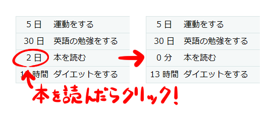
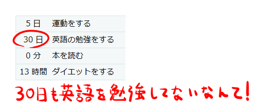

ToCon
beta
トコン
ToConは続けたい人のためのシンプルなToDo管理サービスです。
ToDoを追加して、取り組んだToDoをクリックするだけ！ 
最後に取り組んでから経過した時間がわかるから、
取り組むべきToDoがわかる！ 
その他にもToDoリスト、検索、並び替え機能などがあり、
今後も機能を追加する予定です！
Twitterで新規登録/ログイン
Facebookで新規登録/ログイン